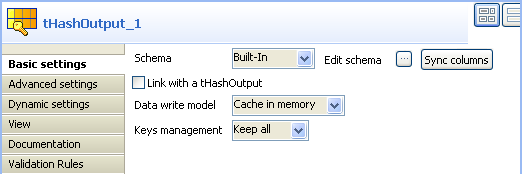

Ce composant est utilisé avec le tHashOutput. Il lit des données depuis la mémoire cache, écrites par le tHashOutput. Ensemble, ces deux composants permettent un accès très rapide aux données afin de faciliter les transactions comprenant un grand nombre de données.
|
Famille de composant |
Technical | |
|
Fonction |
Le composant tHashInput lit des données dans la mémoire cache, écrites par le tHashOutput afin de donner une grande vitesse aux flux de données. | |
|
Objectif |
Ce composant lit des données dans la mémoire cache, écrites par le composant tHashOutput afin de peupler rapidement de données et de faciliter les transactions comprenant un large volume de données. | |
|
Basic settings |
Schema et Edit schema |
Un schéma est une description de ligne, i.e., il définit le nombre de champs qui sont traités et passés au composant suivant. Le schéma est soit local (Built-in), soit distant (Repository). Cliquez sur Edit Schema afin de modifier le schéma. Si vous modifiez le schéma, il devient automatiquement built-in. |
|
|
|
Built-in : Le schéma sera créé et conservé pour ce composant seulement. Voir également le Guide utilisateur de Talend Open Studio. |
|
|
|
Repository : Le schéma existe déjà et est stocké dans le Repository. Ainsi, il peut être réutilisé. Voir également le Guide utilisateur Talend Open Studio. |
|
|
Link with a tHashOutput |
Cochez cette case pour connecter votre composant à un tHashOutput. Cette case est cochée par défaut. |
|
|
Component list |
Liste déroulante comprenant les composants tHashOutput disponibles. |
|
Advanced settings |
tStatCatcher Statistics |
Cochez cette case pour collecter les données de log au niveau du composant. |
|
Utilisation |
Ce composant est utilisé avec le tHashOutput. Il lit des données depuis la mémoire cache, écrites par le tHashOutput. Ensemble, ces deux composants permettent un accès très rapide aux données afin de faciliter les transactions comprenant un grand nombre de données. | |
|
Limitation |
n/a | |
Le Job suivant lit dans la mémoire cache un large volume de données écrites par deux composants tHashOutput et envoie le contenu dans un tFileOutputDelimited. L'objectif de ce Job est de montrer la vitesse de lecture et d'écriture des données. En pratique, les données ainsi générées peuvent être utilisées comme table de référence dans certains cas où un grand volume de données doit être référencé.
Glissez-déposez les composants suivants de la Palette dans l'espace de modélisation graphique : tFixedFlowInput (X2), tHashOutput (X2), tHashInput et tFileOutputDelimited.
Reliez le premier tFixedFlowInput au premier tHashOutput à l'aide d'un lien Row > Main.
Reliez le second tFixedFlowInput au second tHashOutput à l'aide d'un lien Row > Main.
Connectez le premier sous-job (composant tFixedFlowInput_1) au deuxième sous-job (composant tFixedFlowInput_2) à l'aide d'un lien OnSubjobOk.
Reliez le tHashInput au tFileOutputDelimited à l'aide d'un lien Row > Main.
Connectez le deuxième sous-job au dernier sous-job à l'aide d'un lien OnSubjobOk.

Double-cliquez sur le premier tFixedFlowInput pour afficher sa vue Basic settings et configurer ses propriétés de base.

Dans la liste Schema, sélectionnez Built-In.
![[Note]](../images/note.png)
Vous pouvez sélectionner Repository dans la liste Schema afin de renseigner automatiquement les champs, si la métadonnée correspondante est stockée dans le Repository. Pour plus d'informations concernant la centralisation des métadonnées, consultez le chapitre relatifs aux métadonnées dans le Guide utilisateur de Talend Open Studio.
Cliquez sur le bouton [...] à côté du champ Edit schema afin de définir la structure des données du flux d'entrée. Dans ce cas, le schéma contient deux colonnes : ID et ID_Insurance.

Cliquez sur OK pour fermer la boîte de dialogue.
Dans le champ Number of rows, saisissez le nombre d'entrées à écrire, ici 50000.
Sélectionnez l'option Use Single Table. Dans la table Values, saisissez, dans la colonne Value, une valeur pour chaque colonne, ici 1 pour ID et 3 pour ID_Insurance.
Effectuez la même opération pour le second tFixedFlowInput et saisissez 2 pour ID et 4 pour ID_Insurance.
Double-cliquez sur le premier tHashOutput afin d'afficher sa vue Basic settings et définir ses propriétés.
Dans la liste Schema, sélectionnez Built-In puis cliquez sur le bouton Sync columns afin de récupérer le schéma du composant précédent.
Sélectionnez Keep all dans la liste Keys management.
Effectuez la même opération pour le second tHashOutput. Cochez sa case Link with a tHashOutput.
Double-cliquez sur le composant tHashInput pour afficher sa vue Basic settings et définir ses propriétés.

Dans la liste Schema, sélectionnez Built-In. Cliquez sur le bouton [...] à côté du champ Edit schema pour définir la structure des données, la même que dans le tHashOutput.
Sélectionnez tHashOutput_1 dans la liste Component list.
Double-cliquez sur le composant tFileOutputDelimited pour afficher sa vue Basic settings et configurer ses propriétés.

Dans la liste Property Type, sélectionnez Built-In. Dans le champ File Name, saisissez le chemin d'accès à votre fichier ou cliquez sur le bouton [...] afin de parcourir votre système jusqu'à votre fichier. Ici, le chemin d'accès est le suivant : "E:/Allr70207V5.0/Talend-All-r70207-V5.0.0NB/workspace/out.csv"
Cochez la case Include Header puis cliquez sur le bouton Sync columns afin de récupérer le schéma du composant précédent.
Sauvegardez votre Job et appuyez sur F6 pour l'exécuter.
Vous pouvez voir que les nombreuses entrées ont été écrites et lues de manière très rapide.
 |
Pour un scénario associé, consultez :